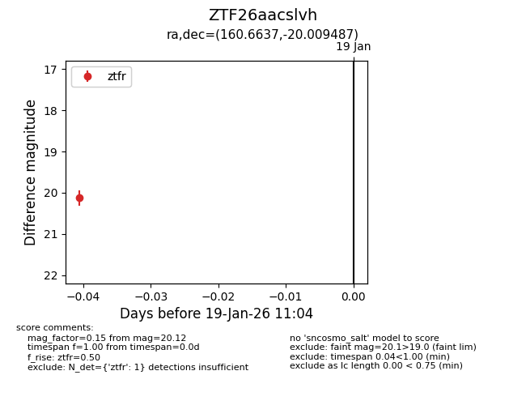
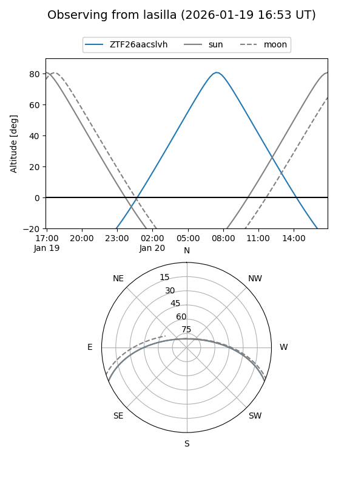
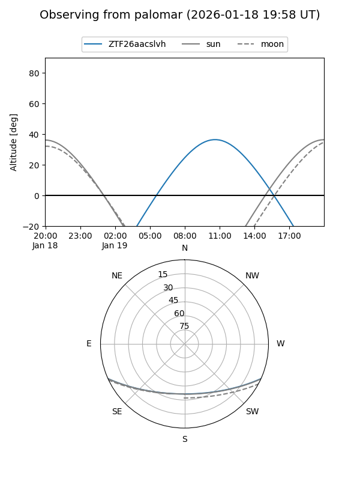

ZTF26aacslvh
Target ZTF26aacslvh at 2026-01-19 11:05
Aliases and brokers:
FINK: link
Lasair: link
ALeRCE: link
alt names
ZTF26aacslvh (ztf,fink_ztf)
Coordinates:
equatorial (ra, dec) = 160.6637,-20.00949
equatorial (HMS+DMS) = 10:42:39.28,-20:00:34.15
galactic (l, b) = (266.0444,+33.48011)
Flags:
Photometry:
last ztfr=20.12
1 ztfr detections
Lightcurve

Visibility


Additional plots